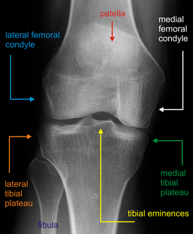
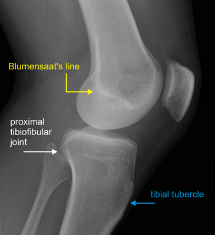

Imaging
Radiographs
- AP and lateral of the knee and proximal tibia: identify fracture pattern

Normal AP knee

Normal lateral knee
- 10° caudal AP radiograph: approximates posterior slope and allows inspection of the eminences and articular surface
- AP and lateral with manual traction: can provide better visualization of individual fracture fragments
- Segond fracture: avulsion fracture of the lateral plateau is associated with ACL tear
- Pellegrini-Stieda lesion: late calcification of the MCL signifies injury
- CT: provides additional detail regarding fracture anatomy and articular involvement
- MRI: useful for identifying meniscal and ligamentous injuries
- Arteriography: evaluate vasculature in the setting of abnormal physical examination